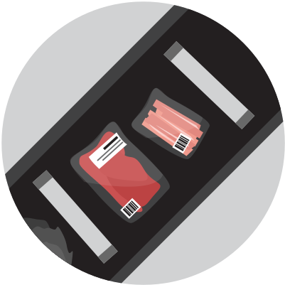
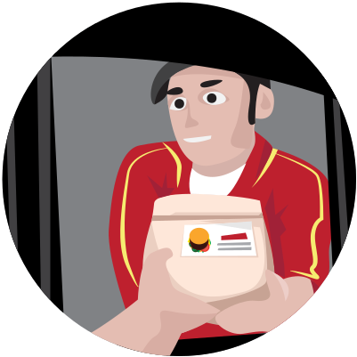

Det har varit en lång utveckling
För några miljoner år sedan började människan att utvecklas.
Då hoppade även vi runt i skogen och letade mat för att överleva dagen.
Varmt välkommen till berättelsen om den svenska köttindustrin
Människan har utvecklats snabbt. Vi har rest till månen och uppfunnit selfiepinnen.
Men något som lever kvar är vår köttkonsumtion. Vi bara älskar kött.
Kött är för många en självklarhet, för andra är det en jobbig verklighet.
Men vilka hemligheter döljer det svenska köttet?
För några miljoner år sedan började människan att utvecklas.
Då hoppade även vi runt i skogen och letade mat för att överleva dagen.
Med tiden blev vi smartare och hittade nya lösningar för att underlätta vår tillvaro, med hjälp av våra händer så började vi att tillverka saker.
Människan är varken köttätare eller växtätare, vi är däremot allätare. Det betyder att vi själva kan välja mellan att äta andra djur eller vegetabilisk föda. Källa
Tillvaron under äldre stenåldern (ca 40 000-10 000 f.Kr) styrdes helt och hållet av jakten på föda vilket gjorde att vi följde bytesdjurens fotspår. Källa
För omkring 12 000 år sedan lärde vi oss att odla och blev jordbrukare. Inte längre behövde vi jaga vår föda, vi kunde odla den själv. Källa
Vi blev bofasta och kunde ordna tillvaron på ett effektivare sätt, men behöll djuren som boskap. Vi gjorde dem tama och fortsatte att äta dom. Källa
Med en så stor efterfrågan... hur ser industrin ut?
Jordbruksverkets statistikdatabas 2013
Dessa uppgifter omfattar inte statistik över slakt av fisk, kräftdjur, kaniner eller andra produktionsdjur som USDA inte lämnar information om.
Hon kallas även för nötdjur. Ordet nöt kommer från det forngermanska ordet ‘nauta’, vilket betyder egendom. Källa
Deras kött kommer att användas för att bland annat tillverka hamburgare, filéer och kalvkotletter.
Förutom det så insemineras kor med sperma för att föda kalvar. På så sätt kan de fortsätta producera mjölk. Mjölken används sedan för att producera mejeriprodukter. Källa
Slaktas efter 18 månader Källa
Den här krabaten har fått svansen avbiten, blivit kastrerad utan bedövning och lider av magsår. Grisen kommer bland annat att användas för bacon och fläsk, men också för gelatin, en vanlig tillsats i en del godisar, glassar och kosmetika.
Han är ganska lik oss, och precis som människan så är han allätare. Källa
Slaktas efter 6 månader Källa
Kaniner, renar, hästar, ankor, strutsar, getter, gäss och kalkoner.
De används alla inom svensk livsmedelsindustri.
Källa
Sverige ligger i framkant. Men världens bästa djurskydd har vi inte. På nyheterna går det att läsa om hur de missköts och utnyttjas år efter år. Källa
I den svenska filmen Ett liv som gris får vi se exempel på hur grisar har det. Och på Walls of glass får vi se foton inifrån svenska slakterier.
På Mjölken.se berättar vi om den svenska mjölkindustrin.
I en rapport från 2010 rekommenderar FN en minskad kött- och mejerikonsumtion
Den globala kött- och mejeriindustrin står för 70% av den globala sötvattenskonsumtionen (drickbart vatten), 38% av den totala landanvändningen och 19% av världens växthusgasutsläpp. Källa
Köttet är till och med en större miljöbov än vad världens alla transportmedel är tillsammans. Källa
FN-rapport 2010
För varje steg i näringskedjan så går energi förlorad. Det beror på att djuren förbrukar biomassan för att bland annat producera värme åt sig själva.
Näringskedjor har vanligtvis endast tre eller fyra nivåer på grund av detta. Källa
Men vi vill inte skrämma dig för livet, det finns andra berättelser för det. Vi har därför tonat ner våra illustrationer en aning.
All slakt i Sverige ska enligt lag utföras med bedövning, inklusive religiös slakt (t.ex Halal). Slakt som sker utomlands följer inte svensk lag och kan därför vara annorlunda. En av orsakerna till att inte använda bedövning är ekonomiska skäl. Det är helt enkelt billigare. Källa
Den vanligaste bedövningsmetoden för kycklingar är elbedövning. Kycklingen hängs upp och ner i fötterna och doppas sedan ner i en tank med strömfarande vatten. Källa
Den vanligaste metoden för att bedöva grisar innan slakt är med gas. Grisarna drivs in i en hiss som sänks ned i ett schakt med koldioxid, där de sedan förlorar medvetandet. Källa
Därefter får djuret halsen uppskuren
Blodet tappas av och djuret dör. Om avblodningen går alltför långsamt kan ett bedövat djur hinna återfå medvetandet innan avblodningen är avslutad. Källa
Djuret styckas upp och säljs vidare
Köttet åker vidare till skolor, restauranger och mataffärer. I många skolor och förskolor är kött ett förstahandsval idag. Det betyder att barn själva måste be om djurfri mat om de inte vill äta kött.



Veganska alternativ innehåller inga djur
Märken så som Oumph, Anamma, Astrid & Aporna, Fry’s, Goodsoy och många fler producerar redan alternativ till kött, fågel och fisk. De är näringsrika och säljs över hela landet.
0
0
0
Det här är endast en uppskattning då vi kan inte garantera att personer inte har röstat mer än en gång.
Du kan påverka
Imorgon, när du står i mataffären, restaurangen eller skolmatsalen, har du makten att påverka framtiden. Tack för att du tänker efter!